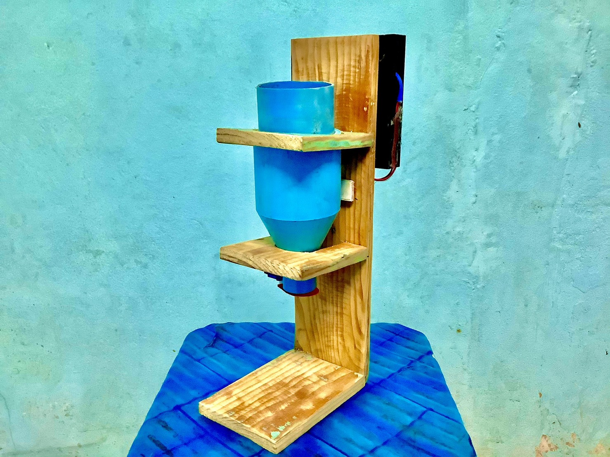

Project ComPro
กลุ่ม Happy Zoo

เครื่องให้อาหารสัตว์แบบAuto
เป็นโปรเจกที่เกียวกับการเครื่องให้อาหารสัตว์แบบautoสามารถให้อาหารสัตว์ได้แม้เราไม่อยู่ผ่านapp
บทคัดย่อ (Abstract)
เครื่องให้อาหารสัตว์อัตโนมัติให้อาหารสัตว์จากทีไหนก็ได้ผ่านเเอพพลิเคชันเเละ
สามารถควบคุมปริมาณได้ตามใจต้องการเเม้ไม่ได้อยู่ในพืนทีใกล้ก็สามารถ
ให้อาหารสัตว์ได้เพียงเเค่มีอินเทอร์เน็ตกับมือถือของท่านไม่ว่าจะระบบปฏิบัติการใด
ก็สามารถให้อาหารสัตว์ได้เเละสามารถให้อาหารสัตว์บกทีขนาดตัวไม่ใหญ่มากได้หลายชนิด
ประโยชน์ทีจะได้รับ
ทําให้ผู้ใช้เกิดความสะดวกสบายในการให้อาหารสัตว์โดยทีไม่ต้องไปให้อาหารเอง
อุปกรณ์ที่ใช้
1.แผ่นไม้
2.ท่อpvc
3.สายไฟอ่อน(24AWG UL1007)
4.รางถ่าน 4 ก่อน(AA 6V)
5.NodeMCU(ESP8266)
6.Tower Pro SG90 Mini Micro Servo